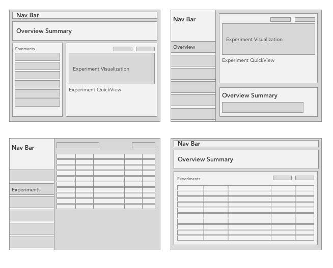
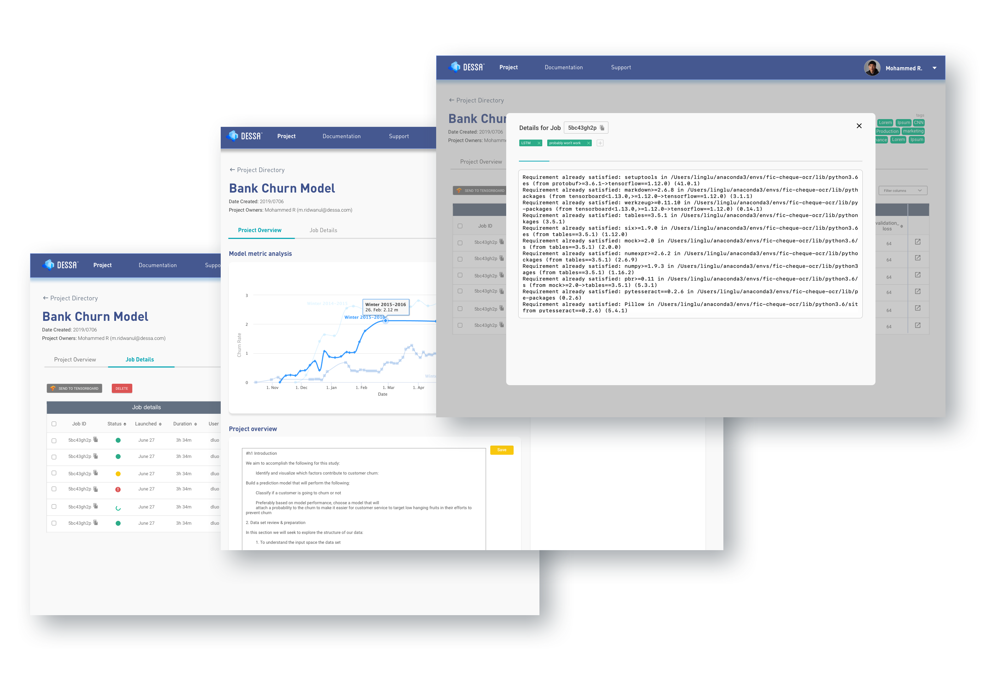
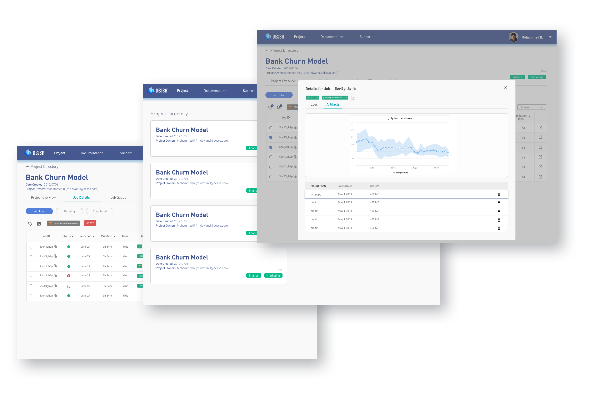
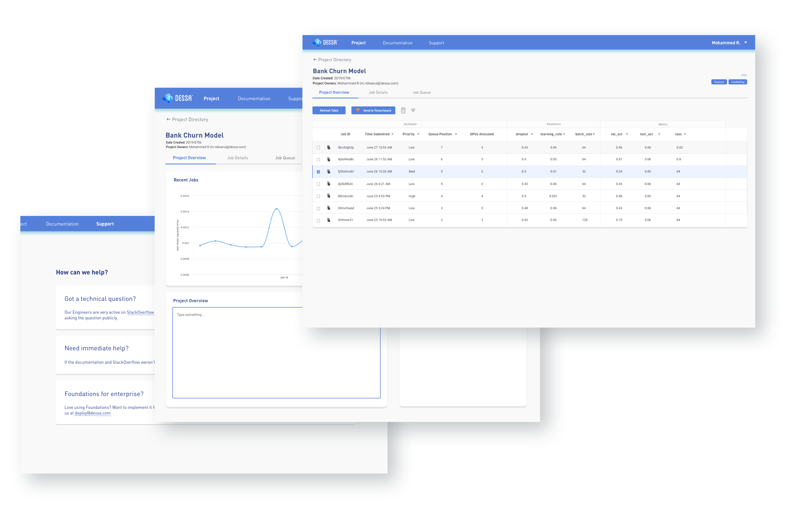
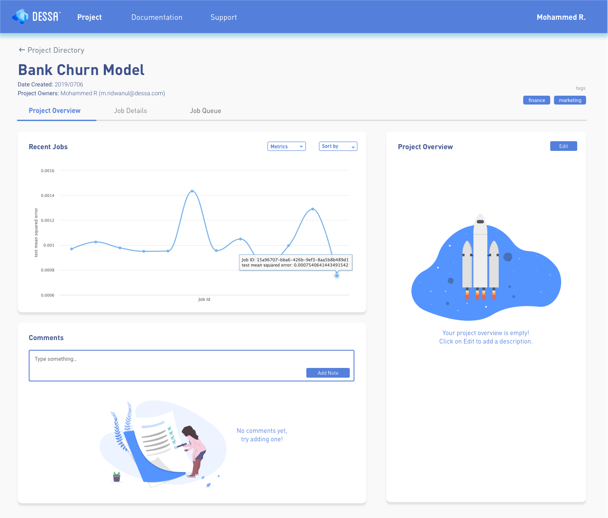

The Process
🔍 Research and design audit
I ran an initial assessment of Atlas with the product manager, where we identified gaps in the user experience, such as having no quick way to assess experiments. I held open-ended user interviews with our in-house machine learning engineers to talk about their needs, potential use cases and general feelings towards our product. The insights from the interviews highlighted useful details that guided the redesign.
✏️ Interview Questions
- Do you use Atlas? If so, why? If not, why not?
- What are you trying to do in your machine learning projects?
- Is feature X valuable to the work you do right now?
- What do you look for in your experiment results?
I kept the interviews mostly open-ended (although it was a redesign, we still had a lot of flexibility with the features and user flow) and left with a few observations:
- Users wanted more ways to directly assess their experiments
- In terms of workflows, there were some diverging preferences like whether to view all experiments together, or have separate views for ongoing/finished/queued
- The command line integration was clumsy
👔 Stakeholder Requirements
In addition to user preferences, there were some restrictions and additional functionalities to be designed for in the project scope.
- The interface should support teams, i.e. be able to comment, sign in, have an account
- Non-machine-learning experts should be able to understand the project / get a sense of the progress
📒 Sketches and wireframes

I condensed the findings into some initial wireframes and flows, discussed them with the PMs and head of product, and started creating the prototypes. Once the first iteration was developed, I held a design meeting with our machine learning and development teams to gather feedback. I cycled through iterating on the designs and running feedback meetings until we finished.
✏️ Design Iterations
The first iteration: Working in all the new functionality, some design elements didn't make it all the way through to the prototype.

The second iteration: Exploring alternative ways to sort and view experiments.

The final iteration: Cleaning up the colour palette and design language, refining hierarchy between labels and content.

✨ Result
After a few rounds of iterating, I landed on an interface that was much more cohesive and supported the complex use cases that machine learning engineers required.
Here are the key features of the final design:
- An overview page that gives users an instant, visual assessment over their experiments
- A new style that better highlights the high important information and lets information of lower priority fade into the background while keeping their presence
- Collaborative features like commenting and project descriptions for inter-team functionality

🤔 Learnings and Reflections
This experience really pushed the importance of good, regular communication in design work. I think in a startup, it can be tempting to just pump through tasks for the sake of completion, but I realized that establishing a strong cross-team collaboration mindset is immensely beneficial.
Involving PMs and developers more throughout the process would have helped us avoid bumps like miscommunication about the feasibility of certain features, or the small issues arising that led us astray from the design.
As a designer I also learned to be more detailed in how I pass on my designs - every screen should have a few copies of how they would look on different sizes, edge cases like really long text boxes or empty states also need to be designed since people do not read minds - just cause' I know how it looks, if it's not visible, there's no guarantee that it'll turn out how it's expected to be.